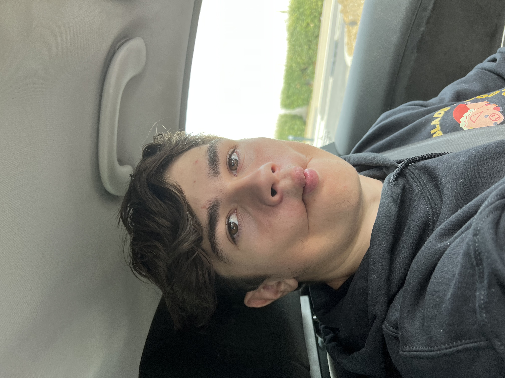

Alexandre Deperdu Castel
Tout le monde veut mon cœur à la tronçonneuse !" Denji- Chainsaw Man
L’informatique est au centre de mes études, j’ai procédé à l’assemblage des ordinateurs que j’utilise au quotidien. J’aime jouer aux jeux vidéo, comprendre leurs fonctionnements et pouvoir modifier certains points. Je dispose d’un imprimante 3D me permettant de mélanger le codage et la robotique via de la développement orienté objet. Je maitrise le langage Python ainsi que le Java, HTML, CSS, et PHP et je suis en apprentissage du Kotlin ainsi que du C#. Depuis 5 ans je choisis des Summers Camps aux U.S.A dans le monde de l’informatique pour apprendre les bases tel que le montage vidéo, l’utilisation de logiciels graphiques tel que Photoshop, la robotique via programmation objet et le codage sous de multiples langages ainsi que la modélisation 3D.

Homme à la bouche de poisson, photographie du XXIème siècle. Artiste anonyme.
Mon expérience
Sleon une édtue de l’Uvinertisé de Cmabrigde, l’odrre des ltteers dnas un mot n’a pas d’ipmrotncae
Dans le cadre de la formation, nous avons eu plusieurs projets a réaliser, entre autres la reproduction d’une page Web (du cinéma), la création d’un jeu vidéo basé sur la sensibilisation aux fake news via Unity et C# et un projet d’activité avec conception d’un site internet, j’ai construit un concept de plateforme proposant différentes activités en Mer à partir de Monaco : sortie pour découvrir la faune, activité de pêche et sports aquatiques. J’entreprends des démarches pour concrétiser ce projet.

Chat à la bouche mouvante, oeuvre d'art du XXIème siècle. Artiste anonyme. Réprésentant mon état d'esprit
Mes études
Je m’oriente vers un métier dans l’informatique tel que programmeur, codeur, designer 3D, data manager, cyber sécurité et autres. J’ai passé un baccalauréat scientifique avec les spécialités Mathématiques et Physique avec mention et comme spécialité de première Numérique et Science de l’informatique. Je pratique l’anglais intensivement que ce soit en lecture, en écriture ou en conversation avec une note de 950 sur 990 au TOEIC.